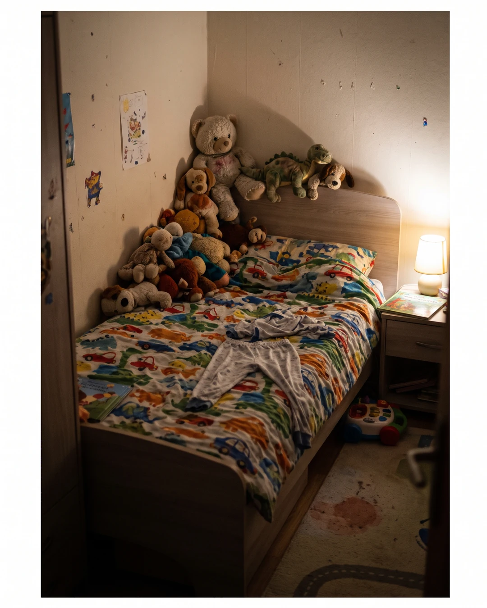
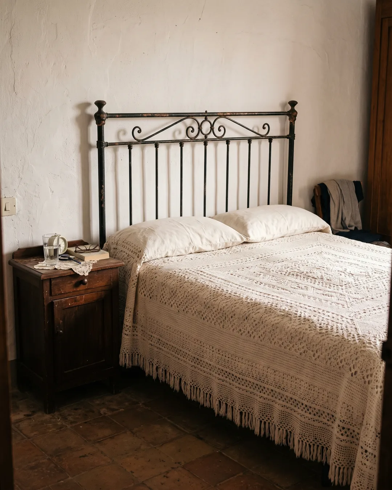

Case #21 · Beds
About this case
Case #21 is closed. It was the daily case for November 21, 2026 and its theme was Beds. The detectives of that day had two challenges: five images to judge as real photographs or AI-made pictures, and five one-sentence claims to judge as facts or fakes.
- AI-generated images: 3 of 5
- Fake claims: 3 of 5
Below you will find every answer. Each AI-generated image comes with the prompt that produced it, and each claim with the truth behind it and the details worth remembering, so you can check what you missed.
One of the fakes: “In 2025, the world's first legless bed was sold, floating 50 cm (20 in) above the floor on electromagnets.” The truth: Levitating beds were not first sold in 2025; Dutch architect Janjaap Ruijssenaars presented a magnetic floating bed in 2006.
Want to sharpen your eye? Read our guide to spotting AI images or our guide to spotting fake news, then play today's case.
Images
-
Image 1

AI
The suspect's confession
A child's bed with a patterned duvet, stuffed animals piled against the wall and pajamas thrown on top; warm light from a night lamp and slight grain.
-
Image 2

AI
The suspect's confession
A double bed in a village house, with an old wrought-iron headboard, a crocheted bedspread and a wooden nightstand with a glass of water; soft afternoon light.
-
Image 3

REAL
Real photograph
-
Image 4
REAL
Real photograph
-
Image 5

AI
The suspect's confession
A simple hotel room with two made single beds, plain beige bedspreads and an open suitcase on the floor; mixed light from a lamp and the window, framed from the doorway.
Fact or Fake
-
Claim 1
FAKE “In 2025, the world's first legless bed was sold, floating 50 cm (20 in) above the floor on electromagnets.”
Levitating beds were not first sold in 2025; Dutch architect Janjaap Ruijssenaars presented a magnetic floating bed in 2006.
- Powerful magnets held it in the air.
- Thin cables held it down so magnetism would not send it flying.
-
Claim 2
FACT “A patented bed swallows its sleeper into a steel bunker when it detects strong earthquakes.”
Several inventors have patented earthquake beds that drop into a sealed steel bunker; demo videos went viral.
- The bunker holds supplies, water, oxygen and first-aid kits until rescue.
-
Claim 3
FAKE “Some sheets cool different parts of the body independently to induce deep sleep.”
Smart sleep systems like Eight Sleep or BedJet heat or cool the mattress with water or air, not with sheets.
- They can set a different temperature for each side of the bed.
- They cannot cool separate body parts of the same person.
-
Claim 4
FACT “King Louis XIV owned more than 400 beds spread across his palaces.”
Historical records confirm that Louis XIV owned exactly 413 beds in his residences and castles.
- The “Sun King” was known for receiving the high nobility from his bed.
-
Claim 5
FAKE “A Japanese mattress detects sleep stress peaks and emits low vibrations that interrupt bad dreams.”
No such Japanese mattress exists; the closest real product is NightWare, an FDA-authorized Apple Watch app.
- It detects heart-rate spikes and movements linked to nightmares.
- A gentle wrist vibration interrupts the nightmare without fully waking you.